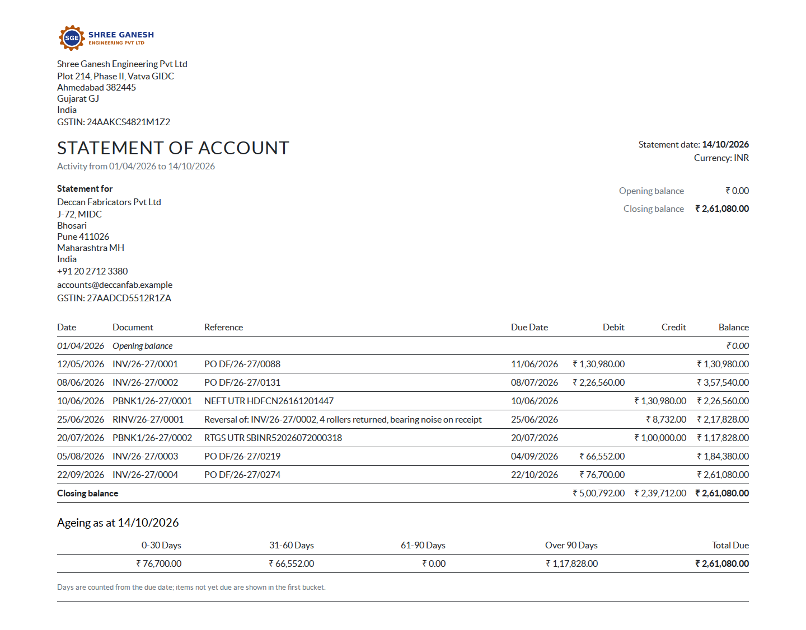
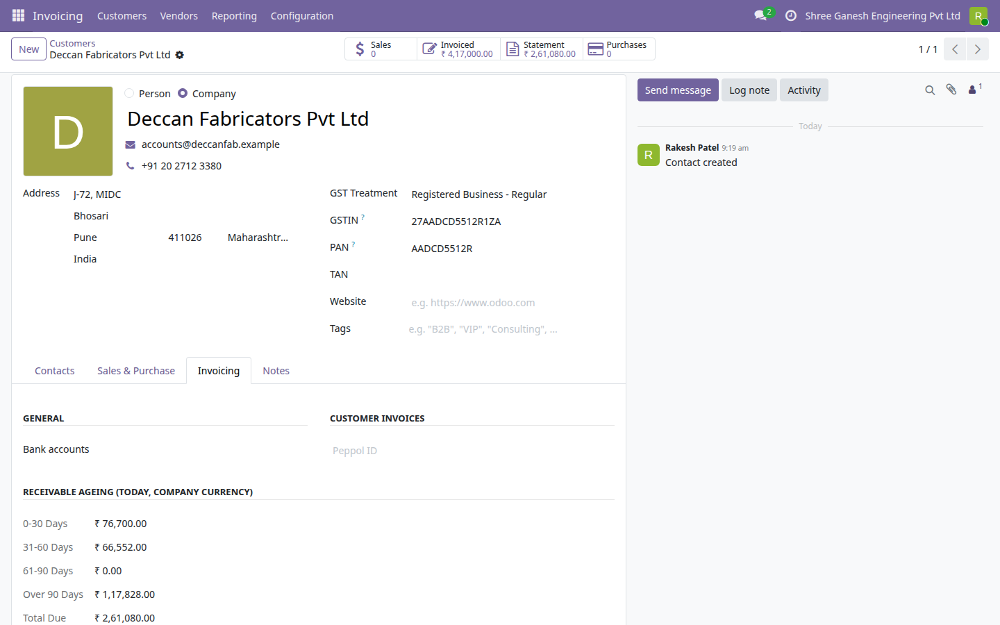
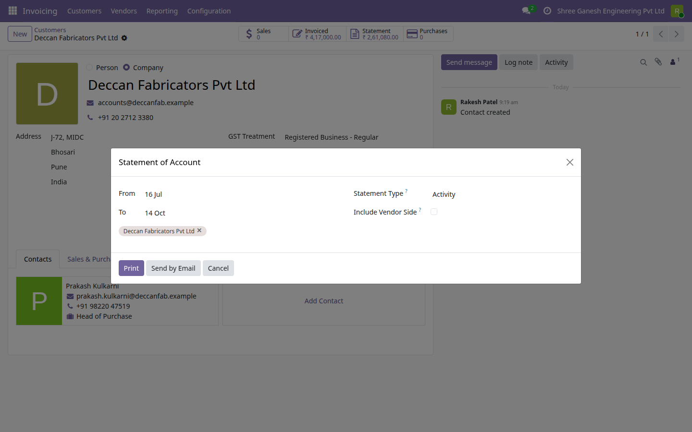

A statement of account is what a customer asks for when they want to agree what they owe you, and what you send at month end to prompt payment. Odoo 19 Community shows a partner ledger on screen but has no printable, mailable statement. This module adds one: pick contacts and a period, print one PDF per partner with opening balance, every movement with a running balance, closing balance and ageing buckets, or send it straight from the contact with the PDF attached to the chatter.

A customer's statement for April to October: opening balance, invoices, payments and a credit note with running balance, closing balance and ageing as at the statement date.

The contact's Invoicing tab shows today's receivable ageing in four buckets, and the Statement button the total due.

The statement wizard: period, activity or outstanding-only, optional vendor side, then Print or Send by Email.
Select the contacts, choose the date range, pick Activity or Outstanding only, and tick Include Vendor Side when a partner is both customer and supplier. Print, or send by email.
Opening balance, then one line per posted document with date, document number, reference, due date, debit, credit and the running balance, then the closing balance and the ageing table.
0-30, 31-60, 61-90 and over 90 days, counted from the due date. Open amounts are replayed from the reconciliations dated on or before the end date, so a statement reprinted for last quarter shows what was open then.
A foreign-currency item is listed at the company-currency value of its journal item, with its amount in the original currency noted beside the reference (on an Outstanding only statement, the amount still open in that currency), so the running balance stays one ledger figure.
Send by Email renders the statements together rather than one PDF run per partner, emails each one to the contacts you selected (a person at a company receives the company's statement) and logs it as a note with the PDF on the company's chatter. Followers of the contact are not mailed. The mail template is editable under Email Templates.
A Statement smart button on every contact, four ageing fields with the total due on the Invoicing tab, and a company bank account and footer note chosen under Invoicing settings.
E-Way Bill Expiry Watch (India) · Indian Financial Year Numbering · GST Outward and Inward Summary (India) · Rupee Amounts in Words (Lakh and Crore) · Indian Invoice Print Extras · MSME Vendor Payment Tracking (India) · India Partner Identifier Validation · Indian Payroll Components (PF, ESI, PT) · India TDS Rate and Deduction Register · UPI Payment QR on Invoices (India) · Fixed Asset Register (Lite) · Branches (Lite) · Account Budgets (Lite) · Knowledge Base (Lite) · Label Designer (Lite) · Material Request (Lite) · Password Vault (Lite) · Proforma Invoice · Support Tickets (Lite)
Need the full version? The paid drkds Payment Follow-ups and Dunning app adds follow-up levels by days overdue, reminder emails, printable letters with an overdue-highlighted statement, call activities, customer blocking and a late-fee line.
Odoo 19 Community · Licence LGPL-3 · Free and open source
Part of the drkds Indian SME suite for Odoo 19 Community.
Support: jyotin@drkdsinfo.com · drkdsinfo.com